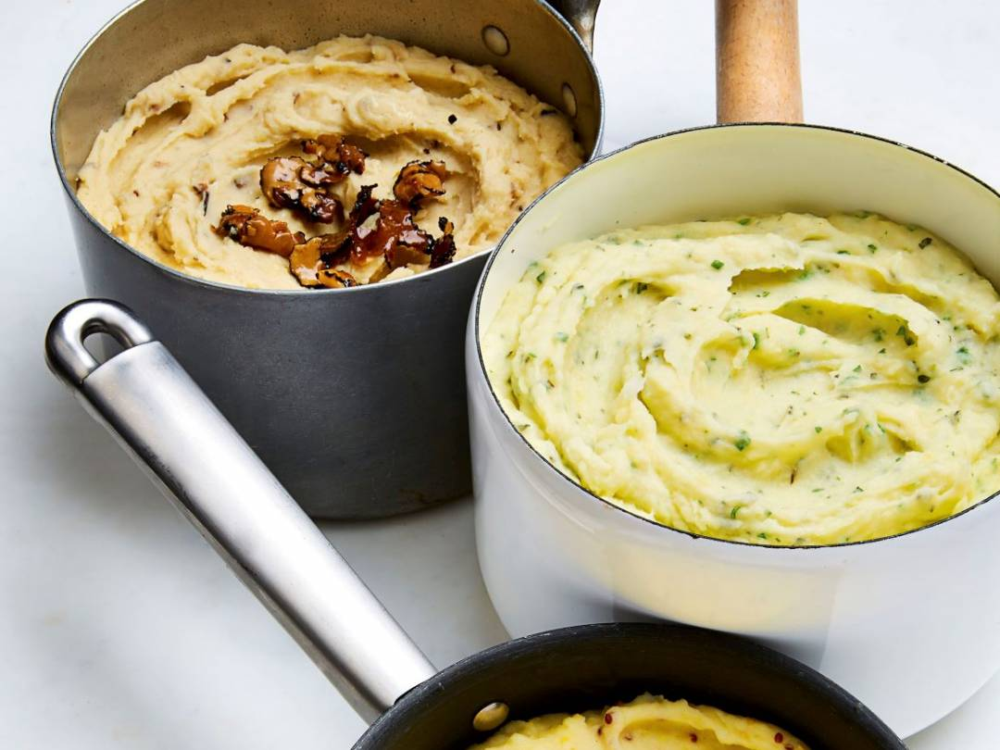

DECADENT MASHED POTATOES WITH TWO VARIATIONS

Mashed Two Ways
Whether its a with Turkey for Thanksgiving, Rib-Eye steak at "Odin's", or by simply by itself; we have created for you, two variations of the world's most coveted puree; Mashed Potatoes. The first is an ode to the winter spirit and the comfort we find in the warmth of a fire; we call it our "Robust Truffle Mash". The second, although second on this list has been the top requested item since it's inception in '17; our signature "Garlic and Herb Mash". Bon Appetit
INGREDIENTS
Serves 4
- 2lbs Yukon Gold potatoes, peeled and cut into 1cm cubes
- 75g butter
- 100ml whole milk
- 100ml double cream
- Sea salt and freshly ground black pepper
Variation 1: Truffle Mash
- 30g porcini and truffle paste
- 30ml white truffle oil
Variation 2: Garlic and Herb Mash
- 2 garlic cloves, peeled and crushed
- 2 tbsp woody herbs, e.g. rosemary, thyme, sage, leaves finely chopped
- 2 tbsp soft herbs, e.g. parsley, chives, dill, finely chopped
COOKING INSTRUCTIONS
- Bring a pan of salted water to a boil. Add the potatoes and cook for 15 minutes with the lid on.
- Meanwhile, for the truffle mash, put the butter, milk and the cream into a small saucepan and bring to a gentle simmer. Add the truffle paste and the truffle oil to the warm cream mixture.
- For the garlic and herb mash, heat the butter in a small saucepan, add the garlic and woody herbs, and cook for 2-3 minutes. Pour in the milk and cream and bring to a gentle simmer. Add the soft herbs and cook for another 2-3 minutes.
- When the potatoes are cooked, drain in a colander. Put them through a potato ricer as quickly as possible and return them to the saucepan.
- Pour over the flavoured cream and mix well. Season to taste with salt and pepper, stir again and serve.
Tips: The hotter the potato is when you put it through the ricer, the fluffier the mash, so move fast once the potatoes have been drained.